The Star in the Jar
Pied Piper Theatre Company · adapted and directed by Tina Williams
Theatre design for story, imagination & connection
Catherine creates playful, beautifully crafted worlds for theatre, family audiences and touring productions.
Explore the work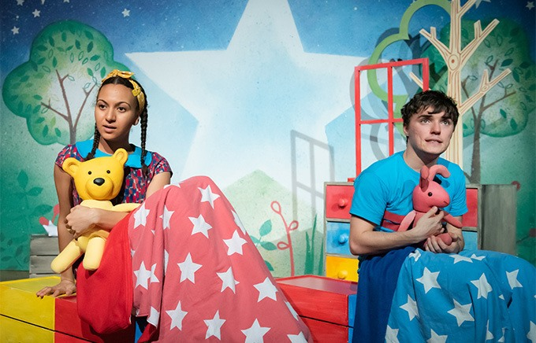
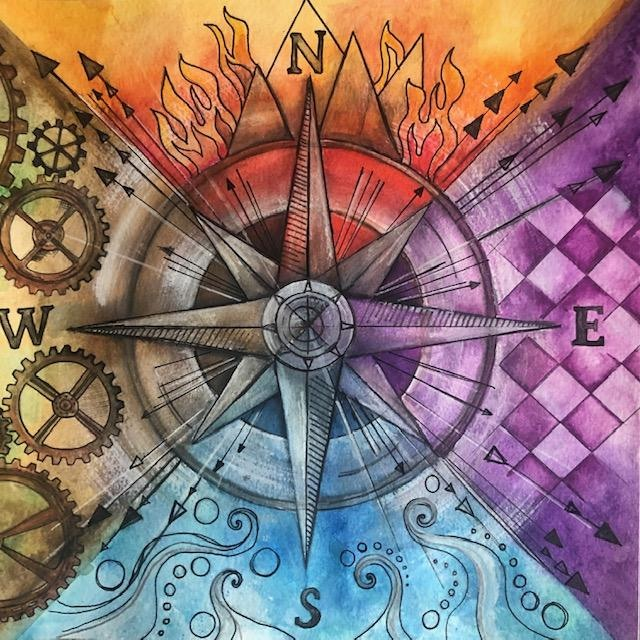
Selected productions
Pied Piper Theatre Company · adapted and directed by Tina Williams
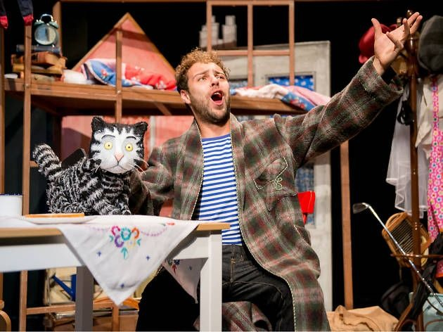
Pied Piper Theatre Company · adapted and directed by Tina Williams
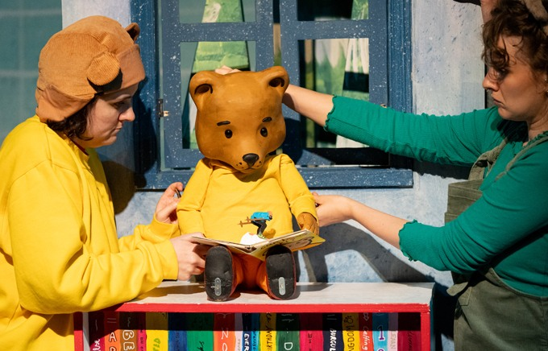
Deafinitely Theatre & Pied Piper Theatre Company
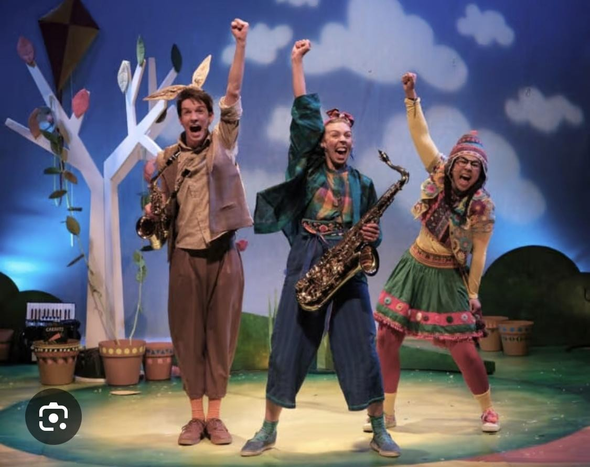
Tutti Frutti · tour production
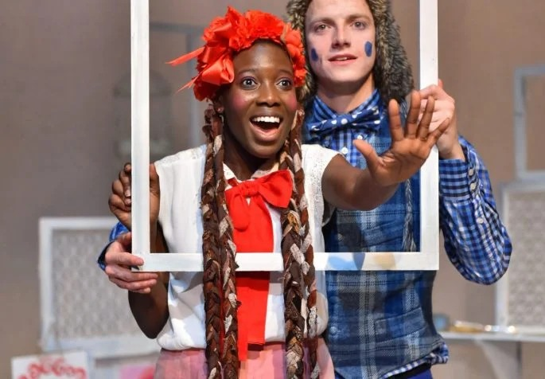
Tutti Frutti · by Mike Kenny, directed by Wendy Harris
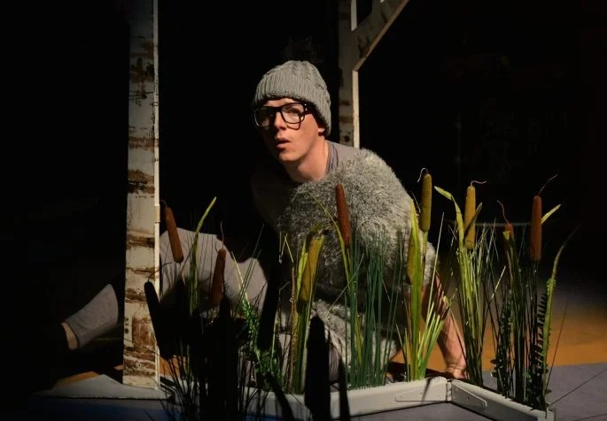
Tutti Frutti · by Emma Reeves, directed by Wendy Harris
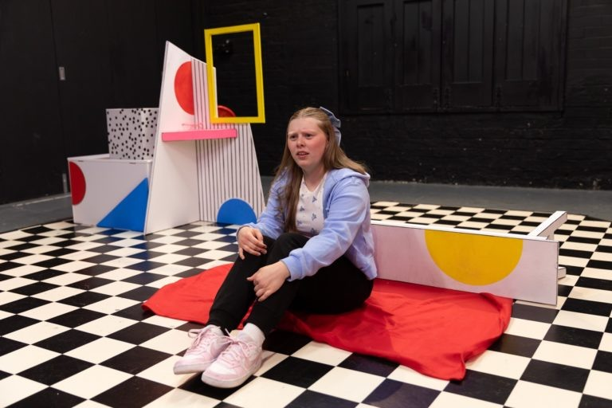
Schools and libraries tour · directed by Kate Veysey
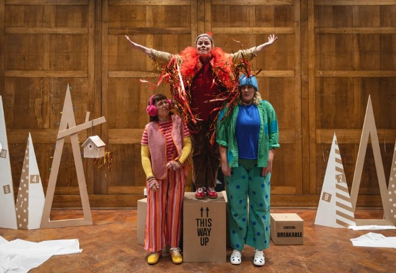
Next Door But One · written and directed by Matt Harper-Hardcastle
Sketchbook
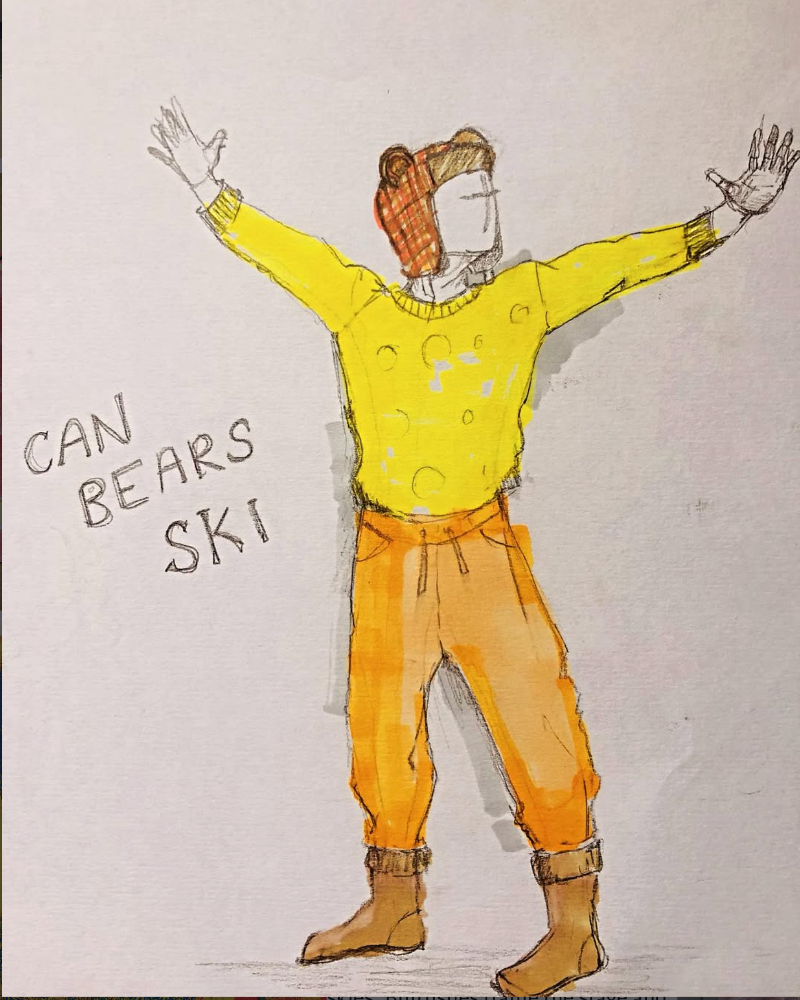
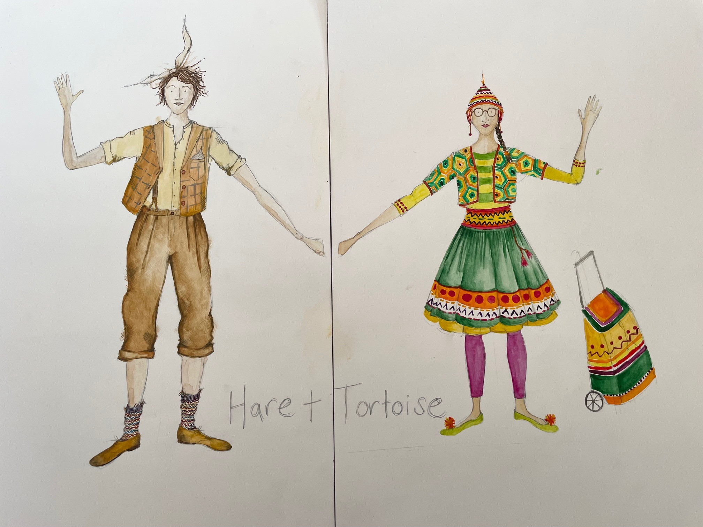
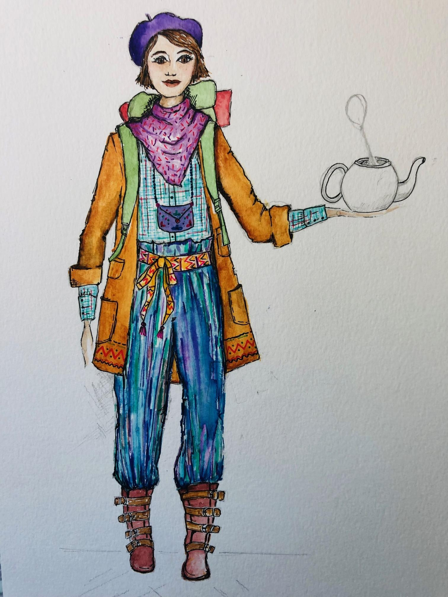
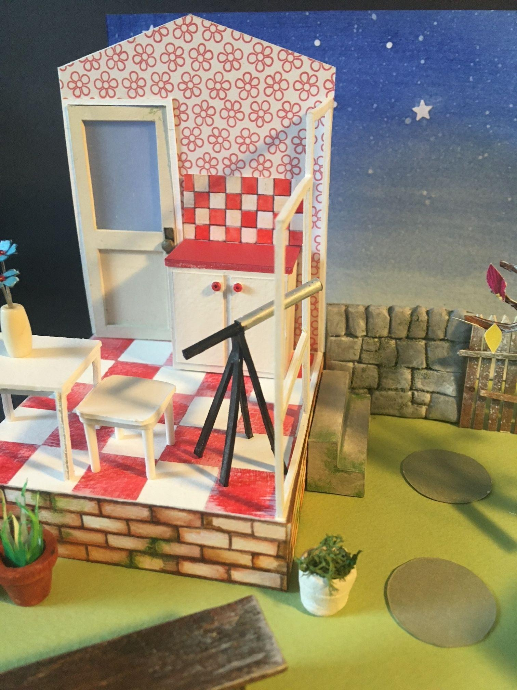
Text, audience, place and the world of the play.
Colour, silhouette, texture and character.
Testing scale, composition and transformation.
Collaborating with directors, performers and makers.
“There’s a relaxed eccentricity to Catherine Chapman’s costume design and set, which quietly charms and engages the children.”— The Guardian, on Ugly Duckling
About Catherine
Catherine trained in Theatre Design at Nottingham Trent University and has worked as a professional theatre designer for more than fifteen years.
Her practice includes set and costume design, costume making, model boxes, film work, youth theatre, community projects and creative work in schools. She is an accomplished seamstress and also loves to knit, paint, sew and explore new crafts.
Catherine is based in York and her work has toured nationally and internationally.
Selected companies & venues
Start a conversation